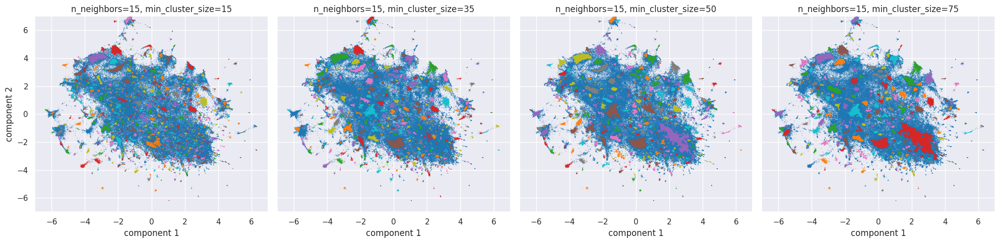
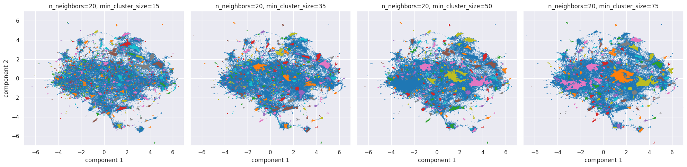
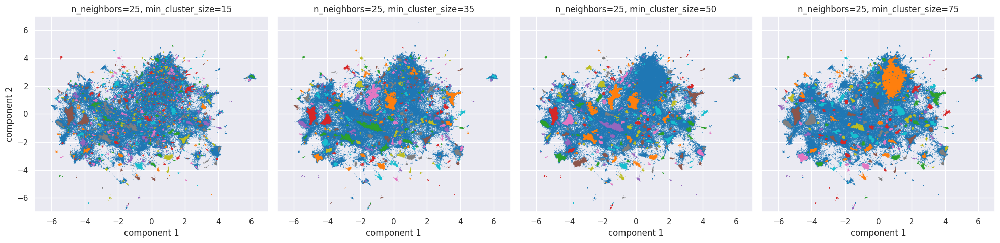

import os
from datetime import datetime
import time
from tqdm import tqdm
import pandas as pd
import spacy
import re
from bertopic import BERTopic
from bertopic.representation import MaximalMarginalRelevance, KeyBERTInspired
from sentence_transformers import SentenceTransformer
# from umap import UMAP
from cuml import UMAP
import matplotlib.pyplot as plt
import seaborn as sns
import numpy as np
from sklearn.feature_extraction.text import CountVectorizer
# from hdbscan import HDBSCAN
from cuml.cluster.hdbscan import HDBSCAN
import plotly.io as pio
pio.renderers.default = "notebook+vscode+jupyterlab"
sns.set_theme(style="darkgrid")
%config InlineBackend.figure_format = "retina"
# Словари:
# en_core_web_sm
# en_core_web_md
# en_core_web_lg
# en_core_web_trf
nlp = spacy.load(
"en_core_web_sm",
exclude=["tok2vec", "tagger", "parser", "attribute_ruler", "lemmatizer", "ner"],
)
spacy_stopwords = list(spacy.lang.en.stop_words.STOP_WORDS)Dynamic Topic Modelling of r/politics subreddit
This project allows:
- To gather data from Reddit and save it in csv format
- To clean gathered data and explore it
- To extract the main topics from gathered data
- To visualise dynamic changes of topics over time
To extract topics, we use BERTopic library, which performs topic modeling using clustering of vector representations of documents. The main differences between BERTopic and other topic models:
- High speed due to reducing the dimensionality of vector representations.
- Modular structure of the model pipeline: the stages of vectorization, dimensionality reduction and clustering are separated from each other, which allows you to easily and quickly experiment with different combinations of algorithm settings.
- The model pipeline consists of SOTA tools: SBERT, UMAP, HDBSCAN. Combined, this allows you to get the best results compared to other models.
This project can be easily adjusted to other sources of information, which allows you to conduct different experiments.
Install libraries
Load and clean data from csvs
BERTopic uses Transformers. The model learns better if it receives more information from the text. Therefore, preprocessing is minimal.
Function to clean data from HTML elements using regular expressions
def regex_preprocessing(text):
# Удаление URL
text = re.sub(
r"http[s]?://(?:[a-zA-Z]|[0-9]|[$-_@.&+]|[!*\\(\\),]|(?:%[0-9a-fA-F][0-9a-fA-F]))+",
" ",
text,
)
text = re.sub(
r"\(http[s]?://(?:[a-zA-Z]|[0-9]|[$-_@.&+]|[!*\\(\\),]|(?:%[0-9a-fA-F][0-9a-fA-F]))+\)",
" ",
text,
)
# Удаление спецсимволов
text = re.sub(r"\n|\r|\<.*?\>|\{.*?\}|u/|\(.*emote.*\)|\[gif\]|/s|_", " ", text)
# Оставление только допустимых символов
text = re.sub(r"[^\w0-9'’“”%!?.,-:*()><]", " ", text)
# Удаление лишних скобок
text = re.sub(r"\s\(\s", " ", text)
# Замена лишних пробелов на один пробел
text = re.sub(r"\s+", " ", text)
return text.strip()Function to convert data to a dataframe, drop duplicates in the dataframe and to apply ‘regex_preprocessing’ function to data
def data_preprocessing(file_name):
data = pd.read_csv(file_name)
data_cleaned = data.drop_duplicates(keep=False)
data_cleaned["comments"] = data_cleaned["comments"].apply(regex_preprocessing)
return data_cleanedFunction to create a dataframe with a cleaned data
This function consists of several steps: 1. Firstly, it gets names of csv files in a chosen folder 2. Secondly, it applies ‘data_preprocessing’ function to csv’s to create dataframes with cleaned data 2. Lastly, it creates a combined dataframe with cleaned data
def process_data(directory):
file_names = []
for filename in os.listdir(directory):
file = os.path.join(directory, filename)
file_names.append(file)
file_names.sort()
dataframes = []
for name in file_names:
dataframes.append(data_preprocessing(name))
cleaned_df = (
pd.concat(dataframes)
.drop(columns="time", axis=1)
.reset_index(drop=True)
.drop_duplicates()
.dropna()
)
return cleaned_dfApply data processing functions to gathered data
For this experiment, we load cvs’s with data marked as ‘hot’ by reddit algorithms.
directory = "original_data/hot"
combined_df = process_data(directory)
len(combined_df["comments"].to_list())264230Convert the dataframe to a list for a further work
comments = combined_df["comments"].to_list()
timestamps = combined_df["date"].to_list()Create embeddings from cleaned data
The gte-small model was chosen using the Hugging Face benchmark. It is lightweight and works well with Reddit data.
# Pre-calculate embeddings
embedding_model = SentenceTransformer(
model_name_or_path="thenlper/gte-small",
cache_folder="transformers_cache",
)
embeddings = embedding_model.encode(comments, show_progress_bar=True)Plot data distribution
We use umap to reduce the dimensionality of the data, which makes it easier to cluster the data using HDBSCAN.
def plot_umap(embeddings, values):
neighbors_list = values
fig, axes = plt.subplots(2, 5, figsize=(40, 15), sharex=True, sharey=True)
axes = axes.flatten()
for ax, neighbors in tqdm(zip(axes, neighbors_list)):
umap_model = UMAP(
n_neighbors=neighbors, n_components=2, min_dist=0.0, metric="cosine"
)
# Применяем UMAP к данным
umap_result = umap_model.fit_transform(embeddings)
# Визуализируем результаты
ax.scatter(
umap_result[:, 0], umap_result[:, 1], alpha=0.3, c="orangered", s=0.2
)
ax.set_title(f"UMAP, n_neighbors = {neighbors}")
ax.set_xlabel("Компонента 1")
ax.set_ylabel("Компонента 2")
lim = 7
plt.ylim(-lim, lim)
plt.xlim(-lim, lim)
plt.tight_layout()
plt.show()
def plot_hdbscan(embeddings, umap_values, hdbscan_values):
for n in umap_values:
# Уменьшим размерность с помощью UMAP
umap_model = UMAP(n_neighbors=n, n_components=2, min_dist=0.0, metric="cosine")
umap_result = umap_model.fit_transform(embeddings)
# HDBSCAN
sizes = hdbscan_values
fig, axes = plt.subplots(1, 4, figsize=(30, 7.5), sharex=True, sharey=True)
axes = axes.flatten()
for ax, size in tqdm(zip(axes, sizes)):
# Кластеризуем данные с помощью HDBSCAN
hdbscan_model = HDBSCAN(
min_cluster_size=size, metric="euclidean", prediction_data=True
)
hdbscan_labels = hdbscan_model.fit_predict(umap_result)
# Создадим DataFrame с результатами UMAP и метками HDBSCAN
df = pd.DataFrame(
umap_result, columns=[f"UMAP{i+1}" for i in range(0, 2, 1)]
)
df["Cluster"] = hdbscan_labels
# Рассеянная диаграмма для результатов UMAP
sns.scatterplot(
x="UMAP1",
y="UMAP2",
hue="Cluster",
data=df,
palette="tab10",
legend=None,
linewidth=0,
s=1,
ax=ax,
).set_title(f"n_neighbors={n}, min_cluster_size={size}")
ax.set_xlabel("Компонента 1")
ax.set_ylabel("Компонента 2")
lim = 7
plt.ylim(-lim, lim)
plt.xlim(-lim, lim)
plt.tight_layout()
plt.show()We plot a range of values to see how a structure of data changes: from a more local structure to a global one.
plot_umap(embeddings, np.arange(10, 56, 5))10it [01:23, 8.34s/it]We can see sizes of created clusters with different parameter combinations.
plot_hdbscan(embeddings, [10, 15, 25], [15, 35, 50, 75])4it [02:05, 31.45s/it]
4it [01:53, 28.43s/it]
4it [02:03, 30.86s/it]
Extract topics using BERTopic
This part is purely experimental and requires a lot of time to tune hyperparameters of models to get the best ouput results.
Current hyperparameters are chosen taking into account the goals:
- Preserve the local structure of the data after reducing the dimensionality of the data with UMAP
- Reduce the amount of noise in clusters and create an adequate number of topics with HDBSCAN
- Create a list of understandable topics at the output
In this experiment, we use MaximalMarginalRelevance topic representation model, which changes the order of words in topics to remove semantic repetitions and create a sequence of the most significant words.
We use CountVectorizer from scikit-learn to: 1. remove very rare and frequent words from the final topic representations 2. create n-grams, up to 2 words in total 3. remove stopwords using spaCy stopwords list
Start Topic Modelling Pipeline
# UMAP Init
umap_model = UMAP(n_neighbors=25, n_components=5, min_dist=0.0, metric="cosine")
# HDBSCAN Init
hdbscan_model = HDBSCAN(min_cluster_size=50, metric="euclidean", prediction_data=True)
# Stop words cleaning
vectorizer_model = CountVectorizer(
stop_words=spacy_stopwords, min_df=0.03, max_df=0.99, ngram_range=(1, 2)
)
# BERTopic model Init
representation_model = MaximalMarginalRelevance()
topic_model = BERTopic(
embedding_model=embedding_model,
umap_model=umap_model,
hdbscan_model=hdbscan_model,
vectorizer_model=vectorizer_model,
representation_model=representation_model,
verbose=True,
)
# Обучаем модель
topics, probs = topic_model.fit_transform(comments, embeddings)
# Получаем темы
topic_representation = topic_model.get_topic_info()2024-12-05 22:06:46,983 - BERTopic - Dimensionality - Fitting the dimensionality reduction algorithm
2024-12-05 22:07:09,234 - BERTopic - Dimensionality - Completed ✓
2024-12-05 22:07:09,238 - BERTopic - Cluster - Start clustering the reduced embeddings[I] [22:06:55.203170] Transform can only be run with brute force. Using brute force.2024-12-05 22:07:58,346 - BERTopic - Cluster - Completed ✓
2024-12-05 22:07:58,382 - BERTopic - Representation - Extracting topics from clusters using representation models.
2024-12-05 22:08:21,680 - BERTopic - Representation - Completed ✓Get topics
# Получаем темы
topic_representation = topic_model.get_topic_info()topic_representation["Name"].to_list()['-1_trump_vote_election_democrats',
'0_vote harris_voted harris_harris wins_harris win',
'1_campaign_didn_win_vote',
'2_trump_trump supporters_voted trump_donald trump',
'3_russia_putin_ukraine_nato',
'4_deported_deport_deportation_immigration',
'5_israel_gaza_palestine_palestinians',
'6_church_christian_christians_religion',
'7_biden_joe biden_blame biden_biden said',
'8_rfk_vaccines_vaccine_rfk jr',
'9_inflation_tariffs_economy_prices',
'10_media_fox news_journalism_mainstream media',
'11_polling_pollsters_polls vote_vote vote vote',
'12_kamala_vote kamala_voted kamala_kamala wins',
'13_military_guard_national guard_veterans',
'14_won_lose_gonna_knows',
'15_trans_trans people_gender_transgender',
'16_vote_popular vote_election_voted',
'17_abortion_roe_abortions_pregnancy',
'18_musk_elon musk_tesla_spacex',
'19_thanks_thank_cool_awesome',
'20_democrats_dems_blame_blame democrats',
'21_cruz_states_blue states_california',
'22_america_americans_american_america great',
'23_vance_jd vance_peter thiel_vp',
'24_rapist_rape_pedophile_rapists',
'25_rogan_joe_joe rogan_podcast',
'26_hitler_nazi_nazis_nazi germany',
'27_supreme court_scotus_justices_judges',
'28_bernie_dnc_bernie sanders_hillary',
'29_women_women vote_women voted_wives',
'30_fascist_fascism_fascists_mussolini',
'31_gaetz_matt gaetz_mccarthy_doj',
'32_elon_trump elon_elon trump_like elon',
'33_maga_maga cult_maga people_maga voters',
'34_project 2025_2025_heritage foundation_plan',
'35_democracy_republic_democracies_american democracy',
'36_women_divorce_fault divorce_hate women',
'37_iowa_selzer_poll_selzer poll',
'38_gen_boomers_generation_millennials',
'39_leopards_leopard_leopardsatemyface_eat face',
'40_aca_insurance_obamacare_health insurance',
'41_epstein_jeffrey epstein_trump epstein_tapes',
'42_education_schools_school_department education',
'43_fraud_voter fraud_election fraud_steal election',
'44_prison_jail_sentencing_criminal',
'45_eggs_egg_price eggs_egg prices',
'46_gun_guns_militia_second amendment',
'47_hope right_years going_years years_years hope',
'48_idiots_stupid people_fucking stupid_fix stupid',
'49_puerto_rico_puerto rico_ricans',
'50_early voting_ballots_voting_election day',
'51_twitter_deleted_social media_like twitter',
'52_republicans_gop_republican_republican party',
'53_headline_headlines_click bait_read headline',
'54_racism_white people_white man_white men',
'55_echo chamber_echo chambers_reddit echo chamber_reddit echo',
'56_senate_senators_majority leader_appoint',
'57_canada_canadian_immigration_conservative party',
'58_georgia_nc_counties_early voting',
'59_garland_merrick_merrick garland_doj',
'60_reagan_ronald reagan_regan_nixon',
'61_billionaires_billionaire_millionaires_wealth',
'62_conservatives_conservative_liberals_liberal',
'63_mom_dad_kids_parents',
'64_betting_odds_polymarket_bets',
'65_stein_green_green party_jill stein',
'66_cheney_liz_liz cheney_dick cheney',
'67_walz_tim walz_tim_vp',
'68_cooked_beans_beef_recipe',
'69_war_firing squad_firing_war hawk',
'70_shocked_surprised_surprising_shocked shocked',
'71_2016_like 2016_2016 2020_2016 like',
'72_fbi_background checks_security clearance_background check',
'73_tucker_tucker carlson_gay_tim',
'74_truck_garbage truck_garbage_handle',
'75_orange_looks_makeup_orange man',
'76_porn_pornography_ban_banning',
'77_wanted_lol won_happen don_want',
'78_stock_djt_shares_crypto',
'79_pardon_pardons_trump pardon_pardoned',
'80_parents_family_voted_voted trump',
'81_joke_funny_hilarious_laughed',
'82_law_laws_enforcement_rule law',
'83_democrats_party_dems_democratic',
'84_states rights_state rights_states right_state right',
'85_gay_gay guy_gay people_gays',
'86_fluoride_water_teeth_health',
'87_worm_brain_worms_brain worm',
'88_gabbard_tulsi_tulsi gabbard_russian asset',
'89_idiocracy_smartest_smart_idiots',
'90_clown_circus_clowns_clown circus',
'91_signs_trump signs_flags_harris walz',
'92_celebrities_celebrity_endorsements_celebrity endorsements',
'93_climate_climate change_change_world',
'94_housing_homes_houses_buyers',
'95_cross_tattoos_nazi_white supremacist',
'96_wave_mirage_blue_blue wave',
'97_newt_gingrich_cheated_lie',
'98_economist_publication_economists_liberal',
'99_tax_overtime_taxes_irs',
'100_newsom_gavin_california_gavin newsom',
'101_fema_hurricane_hurricanes_florida',
'102_empathy_blame_hate_hate fear',
'103_pence_mike pence_rfk_coward',
'104_spain_visa_countries_ireland',
'105_microphone_mic_mic stand_microphones',
'106_miller_stephen_stephen miller_steven miller',
'107_dementia_behavior_symptom_symptoms',
'108_filibuster_senate_removed_bills',
'109_bolton_cheney_dick cheney_war',
'110_fraud_scam_frauds_fraud claims',
'111_vote blue_voted blue_blue vote_voting blue',
'112_oligarchy_oligarchs_oligarch_billionaires',
'113_garbage_trash_garbage garbage_trash bags',
'114_win_win win_winning_losing',
'115_police_cops_cop_police officers',
'116_reddit_subreddits_banned_mods',
'117_magats_magat_maggots_cultists',
'118_percent_percentages_estimate_90',
'119_robinson_mark robinson_nc_north carolina',
'120_felon_convicted_felons_convicted felon',
'121_civil war_war_confederate_american civil',
'122_holiday_holidays_election day_people work',
'123_woke_wokeness_anti woke_identity',
'124_young people_young voters_year olds_voting',
'125_billionaire_richest_net worth_richest man world',
'126_tiktok_tik tok_tik_videos',
'127_fair election_election election_election 2028_free fair election',
'128_lottery_random_fraud_giveaway',
'129_wins_win_won_winning',
'130_bannon_swamp_steve bannon_drain swamp',
'131_sad_sad sad_depressing_fucking sad',
'132_libs_owning libs_owning_lib',
'133_bots_bot_thread_trolls',
'134_bezos_wapo_endorsement_cancel',
'135_ai_code_truth_human',
'136_lawyers_lawsuit_lawsuits_sue',
'137_leak_leaked_leaks_leaking',
'138_jordan_jim jordan_jim_crimes',
'139_walker_herschel_herschel walker_missile',
'140_pelosi_nancy pelosi_insider_insider trading',
'141_fire_burn_let burn_burned',
'142_black people_black voters_black vote_support black',
'143_late_little late_better late_bit late',
'144_star wars_palpatine_jar_darth',
'145_china_taiwan_chinese_world',
'146_prison_jail_trump prison_felony',
'147_fucked_fucked fucked_gonna worse_pain',
'148_golf_golfing_golf course_play golf',
'149_senate_senators_house senate_senate republicans',
'150_debts_trump pays_trump_pay bills',
'151_taliban_afghanistan_women_hate women',
'152_newsweek_articles_journalism_clickbait',
'153_social security_medicare_pension_ss',
'154_incels_incel_misogynists_won fuck',
'155_fuck_fuck em_good fuck_fuck fuck',
'156_elmo_twitter_twitter trump_bought',
'157_mcconnell_mitch mcconnell_senate_majority leader',
'158_terrorists_terrorism_terrorist_domestic terrorists',
'159_prince_royal_nobility_titles',
'160_economy_recession_economic_economy democrats',
'161_smell_poop_poo_flush',
'162_susan_susan collins_collins_shocked',
'163_youtube_videos_rent free_katie',
'164_florida_ocean_fl_like florida',
'165_lying_lie_liar_lies',
'166_graham_lindsey_lindsay_spineless',
'167_citizens united_ruling_corporations_supreme court',
'168_corruption_corrupt_bribe_like pay',
'169_oliver_john oliver_watch_american citizen',
'170_party_parties_party system_bad choices',
'171_shapiro_josh shapiro_josh_ben shapiro',
'172_pa_philly_pennsylvania_philadelphia',
'173_onion_headline_onions_infowars',
'174_recount_recounts_audits_hand recount',
'175_mooches_metric_imperial_10 days',
'176_alex jones_jones_alex_infowars',
'177_leon_pedo_cult don_trump sorry',
'178_basketball_james_player_miami',
'179_electoral college_electoral_popular vote_vote electoral college',
'180_couch_jd_couches_fuckers',
'181_working class_unions_class working class_class working',
'182_justice_justice system_system_legal system',
'183_man_rogue_man woman_hero',
'184_treason_traitors_traitor_insurrection',
'185_cheating_cheated_cheat_time don',
'186_hogan_hulk_hulk hogan_kid rock',
'187_rallies_rally_said night_lately',
'188_terrifying_nightmare_anxiety_fucking tired',
'189_student_student loan_loan forgiveness_loans',
'190_copium_hopium_sweet_bit right',
'191_slavery_slaves_slave_owning']Dynamic Topic Modelling
# Получаем темы
topics_over_time = topic_model.topics_over_time(
comments,
timestamps,
datetime_format="%Y_%m_%d",
global_tuning=True,
evolution_tuning=True,
nr_bins=20,
)16it [02:14, 8.40s/it]Topics over Time Plot
topic_model.visualize_topics_over_time(
topics_over_time, top_n_topics=10, height=700, width=1500
)Normalized Topics over Time Plot
topic_model.visualize_topics_over_time(
topics_over_time, top_n_topics=10, height=700, width=1500, normalize_frequency=True
)